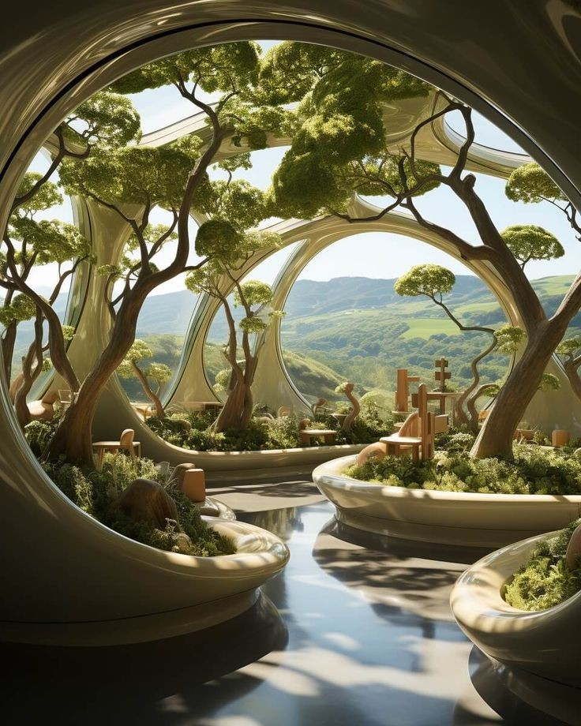

District core
Civic Heart Care Center
The city's central care site for urgent needs, coordination, and round-the-clock intake.
Public care network
Six centers across the city, open at all hours. No appointment, no cost.
All centers are fully staffed around the clock. Walk-ins are received in order of urgency. Response time is measured in minutes. The network does not scale back after dark.

All centers fully staffed. Walk-ins remain welcome at any hour.
District core
The city's central care site for urgent needs, coordination, and round-the-clock intake.
Western Gardens
A slower, quieter care environment connected to the district's restorative gardens and commons rooms.
River Quarter
Close to the Community Kitchen and river route, with strong coordination around nourishment and recovery.
Learning Quarter
A center oriented toward counseling, preventative care, and the daily health needs of students and researchers.
Northern Slope
A highly used neighborhood site serving Elyria's largest residential district with practical and immediate care access.
High & Garden districts
Shared between two districts, balancing quieter therapeutic care with strong botanical and environmental support.